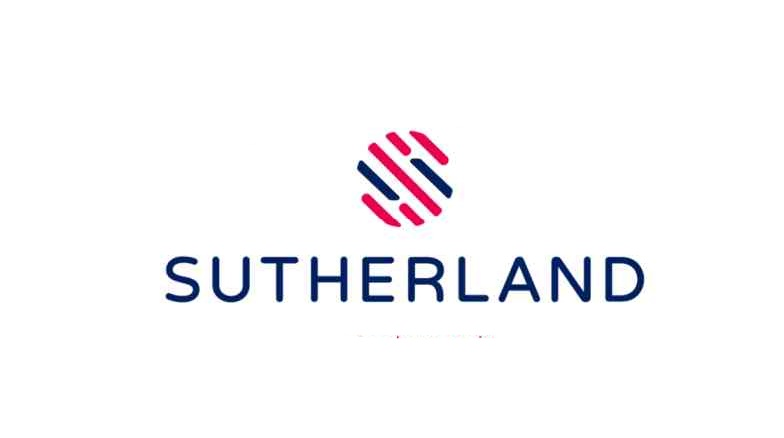

Sutherland Recruitment 2022 | Back Office Analyst
Sutherland Recruitment 2022 | Back Office Analyst
Sutherland has announced a job notification for the post of Back Office Analyst. A student from various disciplines can apply for Sutherland Recruitment 2022. Interested and eligible candidates can read more details below

| Sutherland Recruitment 2022 | |||
|---|---|---|---|
| 1 | Company name | Sutherland | |
| 2 | Post Name | Back Office Analyst | |
| 3 | Salary | 3.6 LPA | |
| 4 | Experience | 0-2 Year | |
| 5 | Job Location | Hyderabad | |
| 6 | Batch | 2022 and below | |
Job Description:
▪︎ Sutherland is hiring candidates for the post of Back Office Analyst.
Job Responsibilities:
▪︎ Ability to withstand repetitive work
▪︎ Able to work positively in a fast-paced, changing environment
▪︎ Ability to multitask and have excellent organizational skills
▪︎ Sees through the eyes of the customer
▪︎ Articulate, bright and curious
▪︎ Passionate about service
Eligibility Criteria:
▪︎ High school degree
▪︎ Bachelor’s degree is a plus from any stream.
▪︎ Strong interpersonal, communication, and presentation skills
Preferred Skill:
▪︎ Experience working in a customer-centric environment is a plus
▪︎ Experience in order processing or Back office is a plus
▪︎ Work pro-actively to ensure potential issues are escalated properly
▪︎ Intermediate-Advanced English level with excellent comprehension skills
▪︎ High typing skills
About Sutherland
Sutherland is one of the world’s leading professional services companies, transforming clients’ business, operating, and technology models for the digital era. Our unique industry-based, consultative approach helps clients envision, build and run more innovative and efficient businesses. Headquartered in the U.S., Cognizant is ranked 185 on the Fortune 500 and is consistently listed among the most admired companies in the world. Learn how Sutherland helps clients lead with digital
How to Apply for Sutherland Recruitment 2022?
▪︎ Interested and Eligible candidates can apply for this drive online by scrolling down and clicking on Apply HERE.